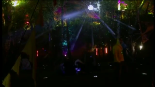
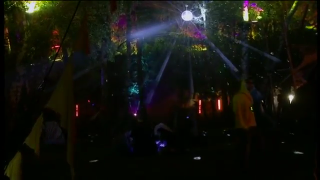

Borderless Windows
For some applications you might want to turn off window decorations altogether.
 This is useful e.g. for a console window or a video.

This is useful e.g. for a console window or a video.

Toggle Borders
To quickly toggle a window borderless, you can use a custom windowmenu entry or a custom keyboard shortcut.
When decorations are disabled, you need a keyboard shortcut to reach the windowmenu for the application, which by default is set to [Alt+Space] as right clicking on a window’s titlebar will not be an option then.
Premanent Changes
To make things permanent, you can use the Remember option from the windowmenu to let fluxbox edit your apps file or you can do that by hand.